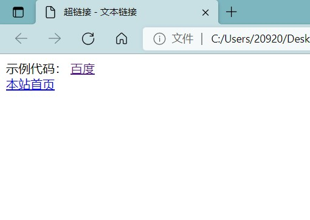
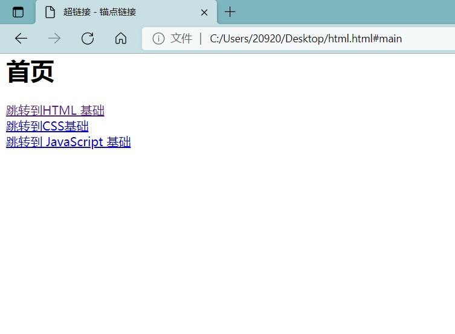
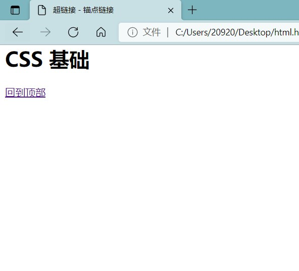
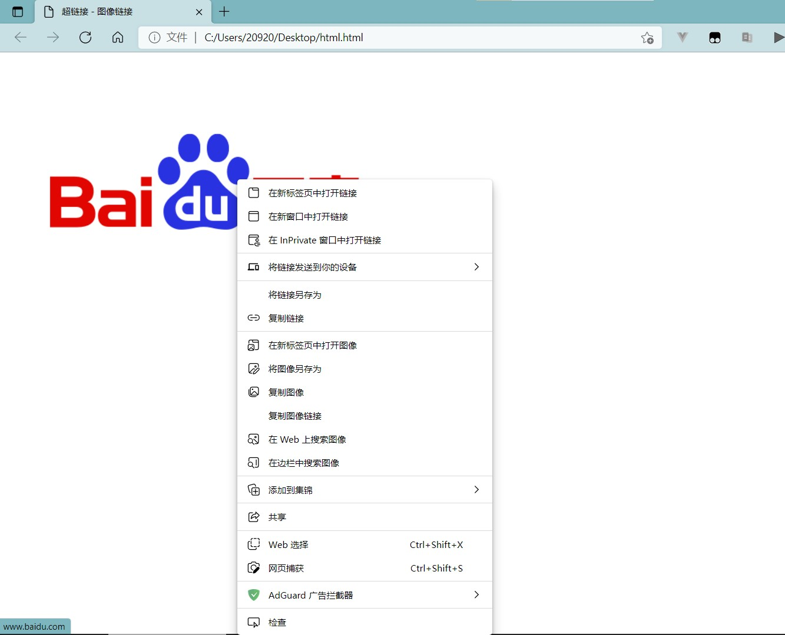
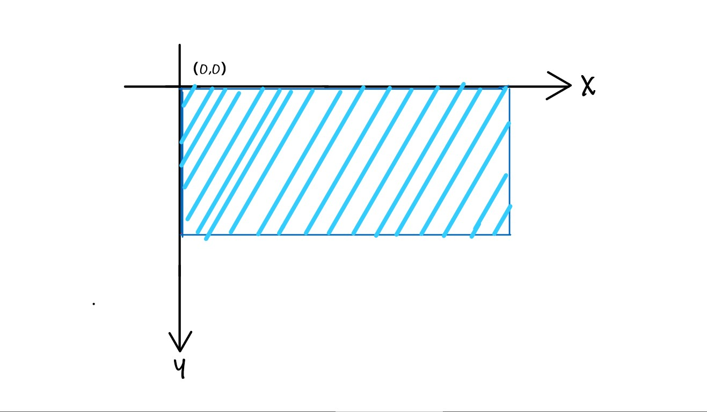
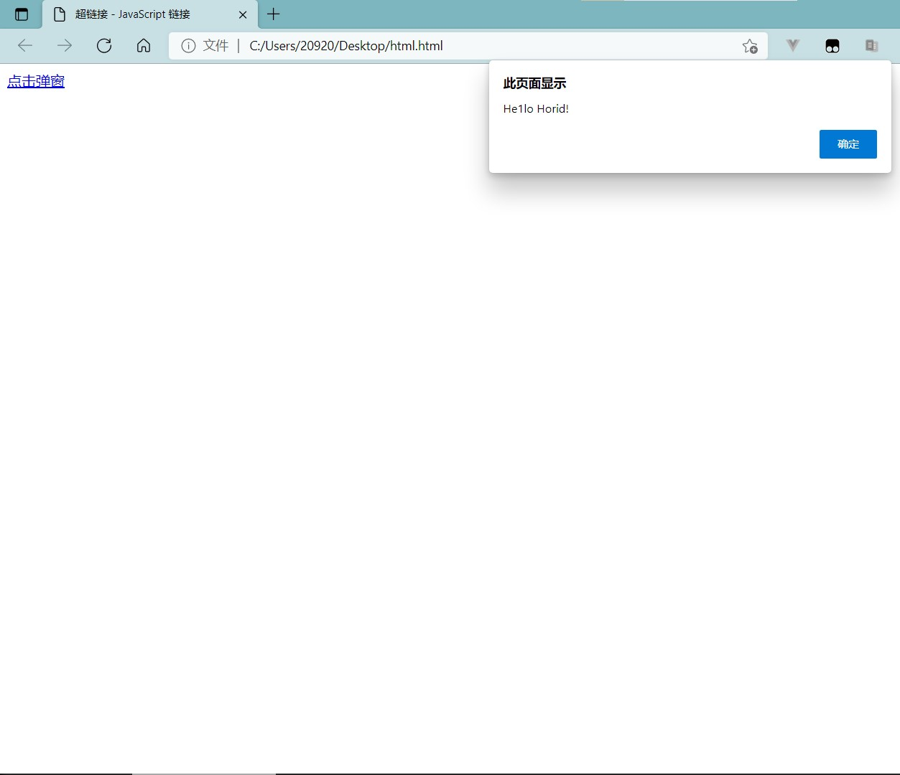

2.3.8 HTML的超链接元素
超链接在本质上属于一个网页的一部分，它是一种允许我们同其他网页或者站点之向 进行链接的元素。各个网页链接在一起后，才能真正构成一个网站。超链接可以是一个字、一个词或者一组词，也可以是一幅图像。将鼠标指针移动到网页中的某个超链接上时， 标箭头会变为一只小手。可以说，超链接是Web页面和其他媒体的重要区别之一。
在HTML中，创建超链接需要用到<a>、<map>、<area>3种标签，这3种标签均支持全局标准属性和全局事件属性。
一个超链接会产生网页跳转动作，这里就会产生一个问题－在哪里打开目标页面。这就需要<a>标签的target属性进行规定，它的默认值为＿self,其他的值还有＿blank、parent、＿top等，如下表所示。
| 值 | 含义 |
|---|---|
| _self | 在超链接所在框架或者窗口中打开目标页面 |
| _blank | 在新浏览器窗口中打开目标页面 |
| _parent | 将目标页面载入含有该链接框架的父框架集或者父窗口中 |
| _top | 在当前的整个浏览器窗口中打开目标页面，因此会删除所有框架 |
常见的超链接大致可以分为以下7种类型。
2.3.8.1 文本链接
文本链接，指的是<a>和</a>标签之间的元素内容为文本内容，是最常见的链接形式。 链接目标可以是站内目标，也可以是站外目标；站内目标可以用相对路径，也可以用绝对 路径，站外目标则必须用绝对路径。
示例代码：
<!DOCTYPE HTML PUBLIC "-//W3C//DTD HTML 4.01//EN" "http://www.w3.org/TR/html4/strict.dtd">
<html>
<head>
<meta http-equiv="content-type" content="text/html";charset="utf-8">
<title>超链接－文本链接</title>
</head>
<body>
<a href="http://www.baidu.com">百度</a><br />
<a href="index.html">本站首页</a>
</body>
</html>
运行结果如下图所示。
2.3.8.2 锚点链接
一份大型文档可以分成多个小节，读者可以通过锚点链接快速定位到自己想看的部分。 锚点通常用唯一属性值id设定，然后在<a>元素的name属性中用“＃＋对应的锚点”即可。
<!DOCTYPE HTML PUBLIC "-//W3C//DTD HTML 4.01//EN" "http://www.w3.org/TR/html4/strict.dtd">
<html>
<head>
<meta http-equiv="content-type" content="text/html"; charset="utf-8">
<title>超链接－锚点链接</title>
</head>
<body>
<h1 id="main">首页</h1>
<a href="#html_base">跳转到HTML 基础</a><br />
<a href="#css_base">跳转到CSS基础</a><br />
<a href="#javascript_base">跳转到 JavaScript 基础</a><br/>
<br /><br /><br /><br /><br /><br /><br /><br /><br/><br /><br />
<br /><br /><br/><br /><br /><br /><br /><br /><br /><br /><br /><br /><br />
<br /><br /><br/><br/>
<h1 id="html_base">HTML 基础</h1>
<a href="#main">回到顶部</a><br />
<br /><br /><br /><br /><br /><br /><br /><br /><br /><br /><br />
<br /><br /><br /><br /><br /><br /><br /><br /><br /><br /><br /><br /><br />
<br /><br /><br /><br />
<h1 id="css_base">CSS 基础</h1>
<a href="#main">回到顶部</a><br />
<br /><br /><br /><br /><br /><br /><br /><br /><br/><br /><br />
<br /><br /><br/><br /><br /><br /><br /><br /><br /><br /><br /><br /><br />
<br /><br /><br/><br/>
<h1 id="javascript_base">JavaScript基础</h1>
<a href="#main">回到顶部</a><br/>
<br /><br /><br /><br /><br /><br /><br /><br /><br/><br /><br />
<br /><br /><br/><br /><br /><br /><br /><br /><br /><br /><br /><br /><br />
<br /><br /><br/><br/>
</body>
</html>
运行结果如下图所示。
单击跳转，可以跳转到相应的标题，如单击“跳转到CSS基础”，浏览器显示的页面。 下图所示。
单击“回到顶部”即可回到首页标题处。
2.3.8.3 图像链接
图像链接就是<a>和</a>标签之间的元素内容为<img>元素。
示例代码：
<!DOCTYPE HTML PUBLIC "-//W3C//DTD HTML 4.01//EN" "http://www.w3.org/TR/html4/strict.dtd">
<html>
<head>
<meta http-equiv="content-type" content="text/html"; charset="utf-8">
<title>超链接－图像链接</title>
</head>
<body>
<a href="http://www.baidu.com">
<img src="https://www.baidu.com/img/PCtm_d9c8750bed0b3c7d089fa7d55720d6cf.png" a1t="Baidu Logo"><br/>
</a>
</body>
</html>
运结果如下图所示。
在图片上单击可以跳转至http://www/baidu.com/,在图片上右击，可复制链接地址。
2.3.8.4 图像热区链接
图像热区链接是图像链接的升级，指的是在同一张图片上，不同的地方可以链接到不 同的目标位置。这时使用的不再是<a>元素，而是<area>元素，<area>元素属性比<a>元素多 了shape、cords两个属性，如下表所示。
| shape属性 | 解释 | cords 属性 | 解释 |
|---|---|---|---|
| circle | 圆形 | x,y,r | （x,y）为圆心坐标，r为半径 |
| rect | 矩形 | x1,yl;x2,y2 | （x1,y1）为左上角坐标 （x2,y2）为右下角坐标 |
| poly | 多边形 | x1,y1;x2,y2;x3,y3;x4,y4; | （x1,y1）,（x2,y2）,（x3,y3）,（x4,y4）,···,分别是多边形各个点的坐标 |
值得注意的是，<area>的坐标系，原点为图片的左上角，x轴的正方向朝右，y轴的正 方向朝下，下图直观地反映了<area>的坐标系。
图像热区链接的使用步骤如下。
（1）通过<map>标签定义一个image-map,可以包含一个以上的热区<arca>,每个 都有独立的链接。另外，要为<map>标签赋予 name属性。
（2）将<img>标签的usemap 属性与<map>标签的name属性相关联。
示例代码：
<!DOCTYPE HTML PUBLIC "-//W3C//DTD HTML 4.01//EN" "http://www.w3.org/TR/html4/strict.dtd">
<html>
<head>
<meta http-equiv="content-type" content="text/html" charset="utf-8">
<title>超链接－图片热区链接</title>
</head>
<body>
<map name="image_link">
<area shape="circle" coords="50,50,30" href="" alt="" />
<area shape="rect" coords="90,20,150,80" href="" alt=""/>
<area shape="poly" coords="200,30,300,10,280,70,260,100,220,50" href="" alt="" />
</map>
<img usemap="#image_link" src="https://www.baidu.com/img/PCtm_d9c8750bed0b3c7d089fa7d55720d6cf.png" alt="Baidu Logo" width="351" height="114">
</body>
</html>
2.3.8.5 E-mail 链接
点击 E-mail 链接后，浏览器会使用系统默认的 E-mail 程序，打开一封新的电子邮件， 且该电子邮件地址为链接指向的地址。href属性值由“mailto:”和E-mail 地址两部分组成。
示例代码：
<!DOCTYPE HTML PUBLIC "-//W3C//DTD HTML 4.01//EN" "http://www.w3.org/TR/html4/strict.dtd">
<html>
<head>
<meta http-equiv="content-type" content="text/html"; charset="utf-8">
<title>超链接－E-mail链接</title>
</head>
<body>
<a href="mailto:someone@example.com">联系我们</a>
</body>
</html>
运行结果如下图所示。
2.3.8.6 JavaScript 链接
当用户点击Javascript链接时会进行JavaScript的调用，具体可以参考JavaScript篇章
示例代码：
<!DOCTYPE HTML PUBLIC "-//W3C//DTD HTML 4.01//EN" "http://www.w3.org/TR/html4/strict.dtd">
<html>
<head>
<title>超链接－JavaScript 链接</title>
</head>
<body>
<a href="javascript:alert('He1lo Horid!')";>点击弹窗</a>
</body>
</html>
运行结果如下图所示。
2.3.8.7 空链接
空链接是指未指派目标地址的超链接，现在使用场景已经很少，通常将 href属性值量 为javascript:void(0).在实际开发中，有的人会将空链接写成 href=“”或者 href=”#”，虽然 两种也是空链接，但它其实有锚点（＃top）的意思，会产生回到顶部的效果。
示例代码：
<!DOCTYPE HTML PUBLIC "-//W3C//DTD HTML 4.01//EN" "http://www.w3.org/TR/html4/strict.dtd">
<html>
<head>
<meta http-equiv="content-type" content="text/html"; charset="utf-8"/>
<title>超链接－空链接</title>
</head>
<body>
<a href="">这是一个空链接</a><br />
<a href="#">这是一个空链接</a><br/>
<a href="javascript:void(0)">这是一个空链接</a><br/>
</body>
</html>